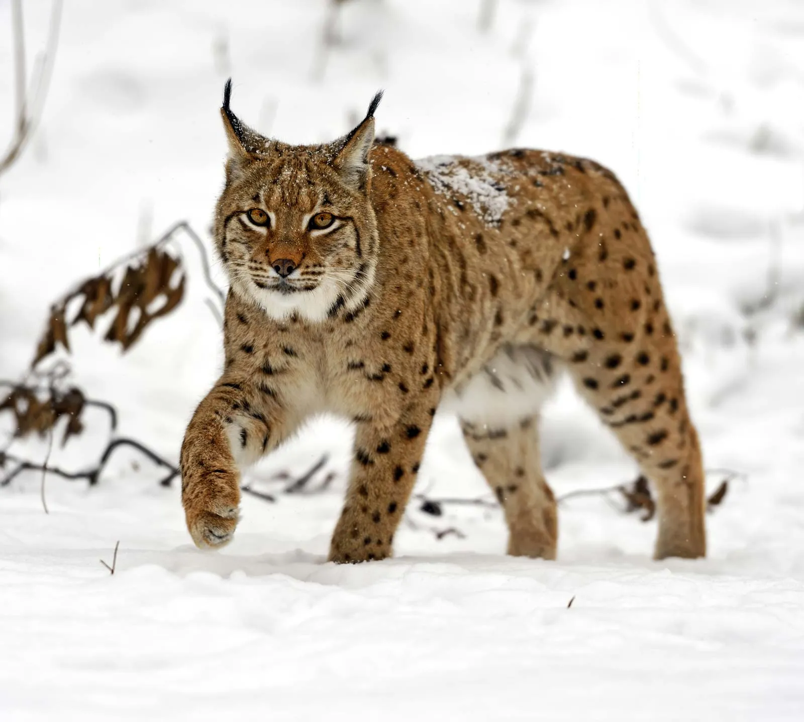
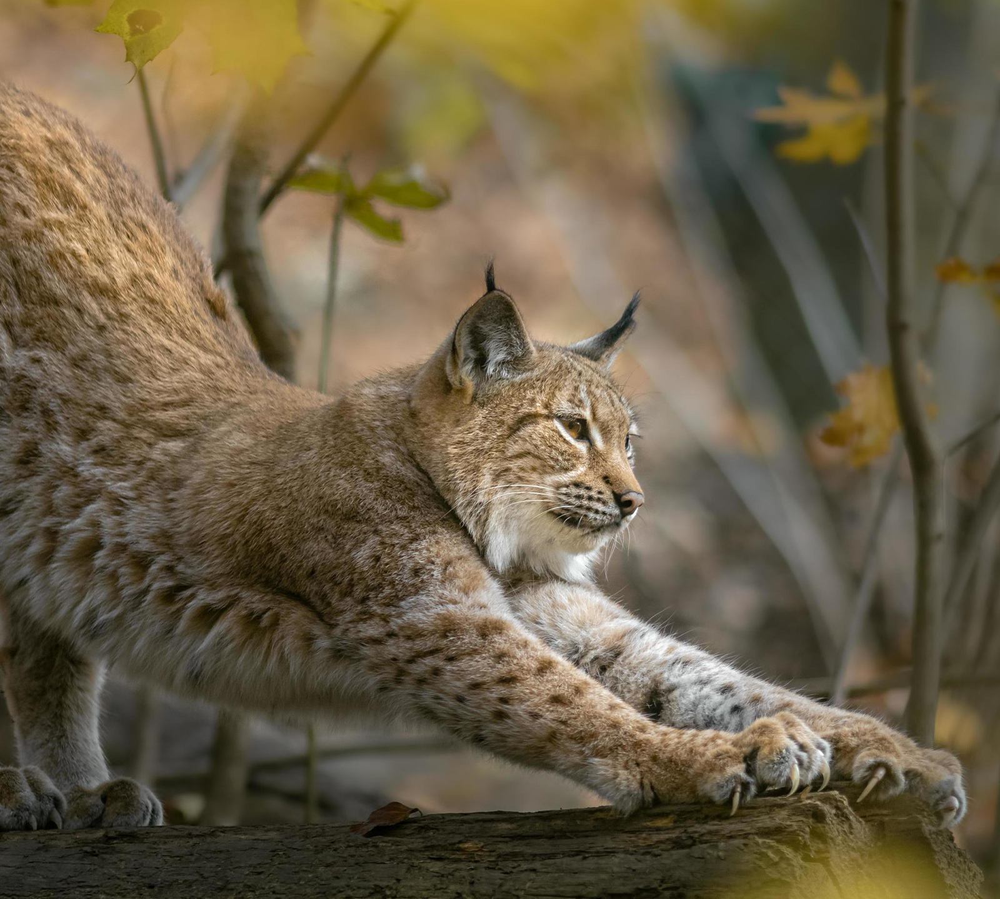
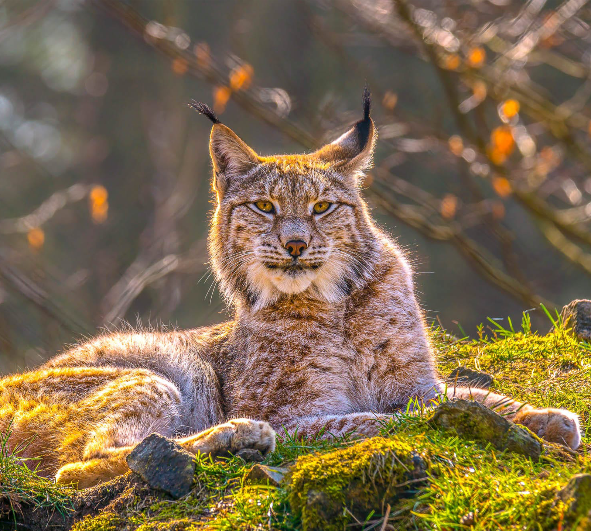

Scientific name: Lynx Lynx

The lynx is a highly adapted winter predator, featuring thick, grey-to-reddish fur for insulation and large, fur-covered paws that act as natural snowshoes, allowing it to move across deep snow.

The lynx is a significant, elusive predator that plays a crucial role in maintaining healthy forest ecosystems. During this time, normally solitary lynx are more active and vocal.

During summer, the lynx has a short, sparse, reddish-brown coat designed for warmer temperatures in forests and mountainous areas. This vibrant coat aids in camouflaging with woodland backgrounds.